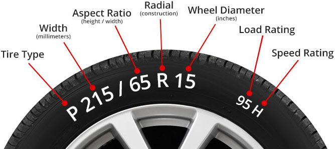

LEARN
Learn about tires:
What you need to know about tires.

Tire type:The letter "P" at the beginning of the tire size tells us the tire
is a P-Metric tire, made to certain standards within the United States, intended
for Passenger vehicles. If a tire size has no letters at the beginning, this
indicates a Euro metric tire. P-Metric and Euro-Metric tires may have different load capacities.
The letters "LT," either at the beginning or at the end of the tire size means it was designed for light trucks.
These tires generally require higher inflation pressures than passenger tires.
Tire type:
The letter "P" at the beginning of the tire size tells us the tire is a P-Metric tire, made to certain standards within the United States, intended for Passenger vehicles. If a tire size has no letters at the beginning, this indicates a Euro metric tire. P-Metric and Euro-Metric tires may have different load capacities. The letters "LT," either at the beginning or at the end of the tire size means it was designed for light trucks. These tires generally require higher inflation pressures than passenger tires.
Tire Width:
This is the width of the tire measured in millimeters from sidewall to sidewall. The first three-digit number in the tire size refers to the tire width. For instance, in a size P205/55 R16 tire, the width is 205 millimeters
Aspect Ratio:
This is the two-digit number after the slash mark in a tire size is the aspect ratio of the height of the tire's cross-section to its width. For example, in a size P205/55 R16 tire, the 55 means that the height is equal to 65% of the tire's width. The bigger the aspect ratio, the bigger the tire's sidewall will be.
Construction:
The letter "R" in a tire size stands for Radial, which means the layers run radially across the tire.
Wheel Diameter:
This is the size of the wheel measured from one end to the other. It tells us the size of the wheel that the tire is intended to fit. A size P205/55 R16 tire is made for a wheel with a 16" diameter.
Load Index:
This indicates the maximum load that the tire can support when accurately inflated. You'll find the maximum load on the tire sidewall, in pounds and kilograms.
Speed Rating:
This tells you the maximum speed capability of a tire. Speed ratings are often matched to the top speed capability of the vehicle. For instance, a tire with an H-speed rating has a maximum speed capability of 130 mph or 210 km/h.
DOT Symbol:
The letters "DOT" on the sidewall indicate that the tire complies with all Federal Motor Vehicle Safety Standards in the United States. Tire Identification Number: The series of letters and numbers following the letters "DOT." The TIN (Tire Identification Number) consists of up to 12 numbers and letters to identify the factory location and the week and year the tire was manufactured.
UTQG:
stands for Uniform Tire Quality Grading, a rating system developed by the U.S. Department of Transportation to show relative tread-wear, traction and temperature capabilities. Traction grades indicate the wet traction of a tire under a controlled test. A tire with an "AA" rating offers outstanding traction in wet conditions. Temperature grades indicate the ability of the tire to withstand and dissipate destructive heat. A tire with a A rating can withstand higher temperatures and operate at higher speeds than a B or C rated tire. Finally, Tread-wear grades are based on standardized government tests to help predict the expected tread-wear of a tire. For instance, a tire with a tread-wear grade of 200 should last twice as long as a tire with a tread-wear grade of 100.
>>>>>>> 0334f30 (initial commit of website) =======Learn about tires:
What you need to know about tires.
Tire type:
The letter "P" at the beginning of the tire size tells us the tire is a P-Metric tire, made to certain standards within the United States, intended for Passenger vehicles. If a tire size has no letters at the beginning, this indicates a Euro metric tire. P-Metric and Euro-Metric tires may have different load capacities. The letters "LT," either at the beginning or at the end of the tire size means it was designed for light trucks. These tires generally require higher inflation pressures than passenger tires.
Tire Width:
This is the width of the tire measured in millimeters from sidewall to sidewall. The first three-digit number in the tire size refers to the tire width. For instance, in a size P205/55 R16 tire, the width is 205 millimeters
Aspect Ratio:
This is the two-digit number after the slash mark in a tire size is the aspect ratio of the height of the tire's cross-section to its width. For example, in a size P205/55 R16 tire, the 55 means that the height is equal to 65% of the tire's width. The bigger the aspect ratio, the bigger the tire's sidewall will be.
Construction:
The letter "R" in a tire size stands for Radial, which means the layers run radially across the tire.
Wheel Diameter:
This is the size of the wheel measured from one end to the other. It tells us the size of the wheel that the tire is intended to fit. A size P205/55 R16 tire is made for a wheel with a 16" diameter.
Load Index:
This indicates the maximum load that the tire can support when accurately inflated. You'll find the maximum load on the tire sidewall, in pounds and kilograms.
Speed Rating:
This tells you the maximum speed capability of a tire. Speed ratings are often matched to the top speed capability of the vehicle. For instance, a tire with an H-speed rating has a maximum speed capability of 130 mph or 210 km/h.
DOT Symbol:
The letters "DOT" on the sidewall indicate that the tire complies with all Federal Motor Vehicle Safety Standards in the United States. Tire Identification Number: The series of letters and numbers following the letters "DOT." The TIN (Tire Identification Number) consists of up to 12 numbers and letters to identify the factory location and the week and year the tire was manufactured.
UTQG:
stands for Uniform Tire Quality Grading, a rating system developed by the U.S. Department of Transportation to show relative tread-wear, traction and temperature capabilities. Traction grades indicate the wet traction of a tire under a controlled test. A tire with an "AA" rating offers outstanding traction in wet conditions. Temperature grades indicate the ability of the tire to withstand and dissipate destructive heat. A tire with a A rating can withstand higher temperatures and operate at higher speeds than a B or C rated tire. Finally, Tread-wear grades are based on standardized government tests to help predict the expected tread-wear of a tire